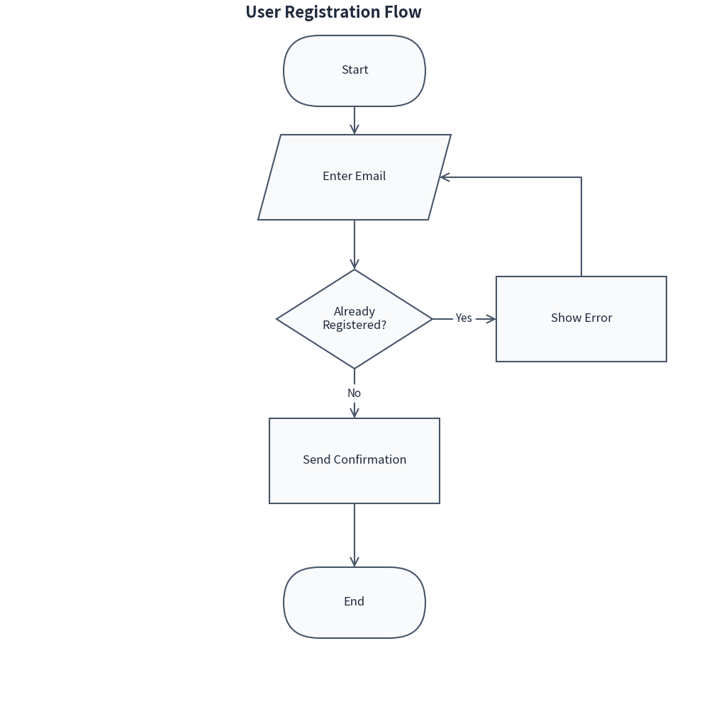
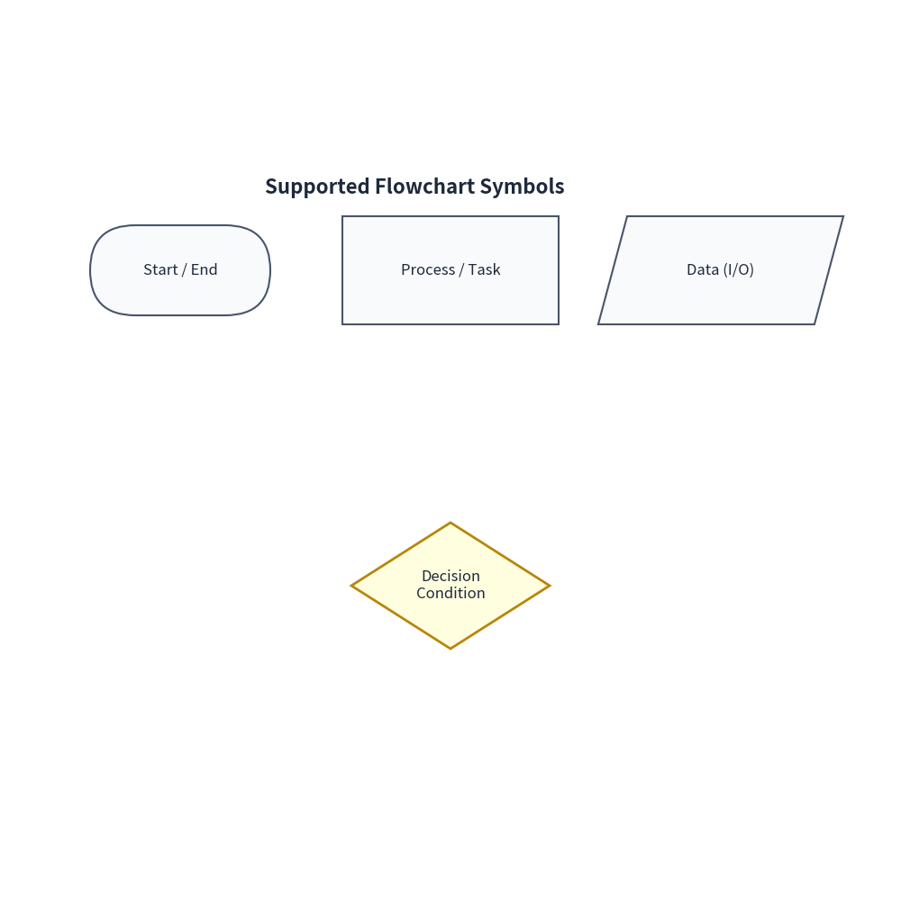
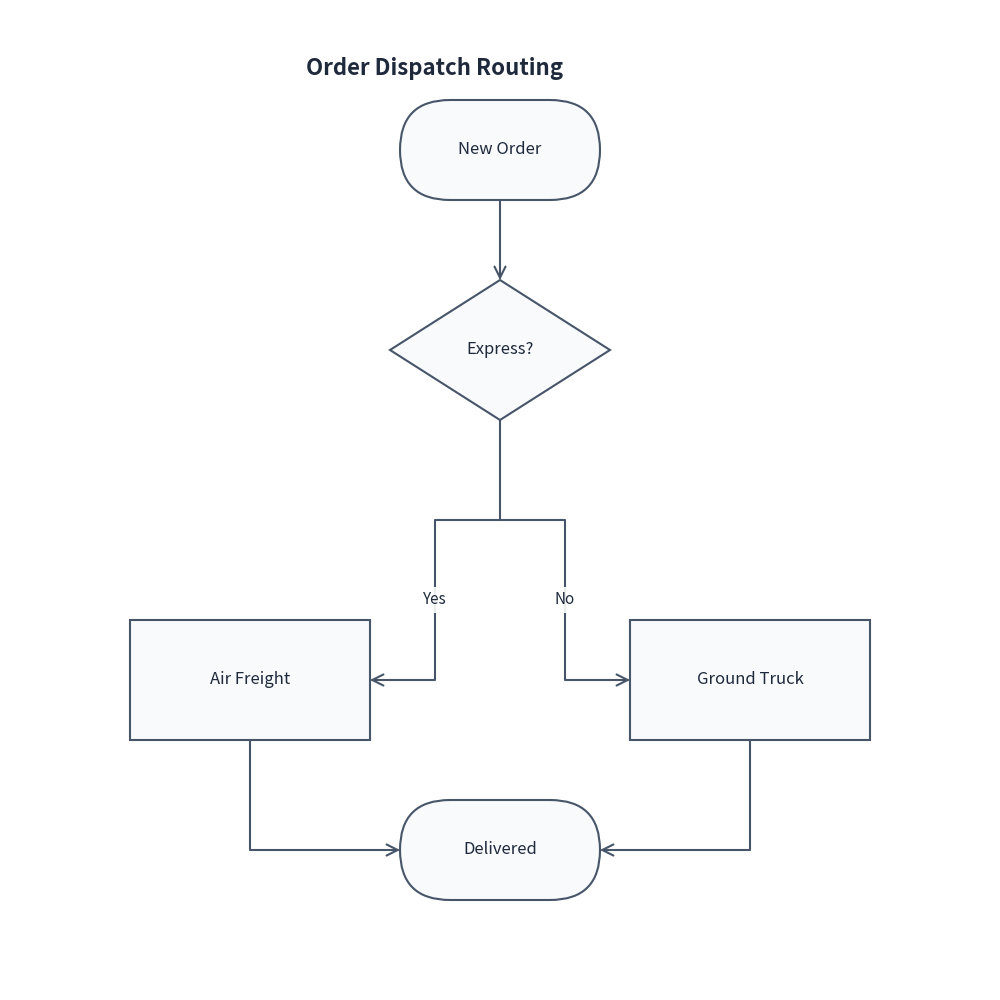
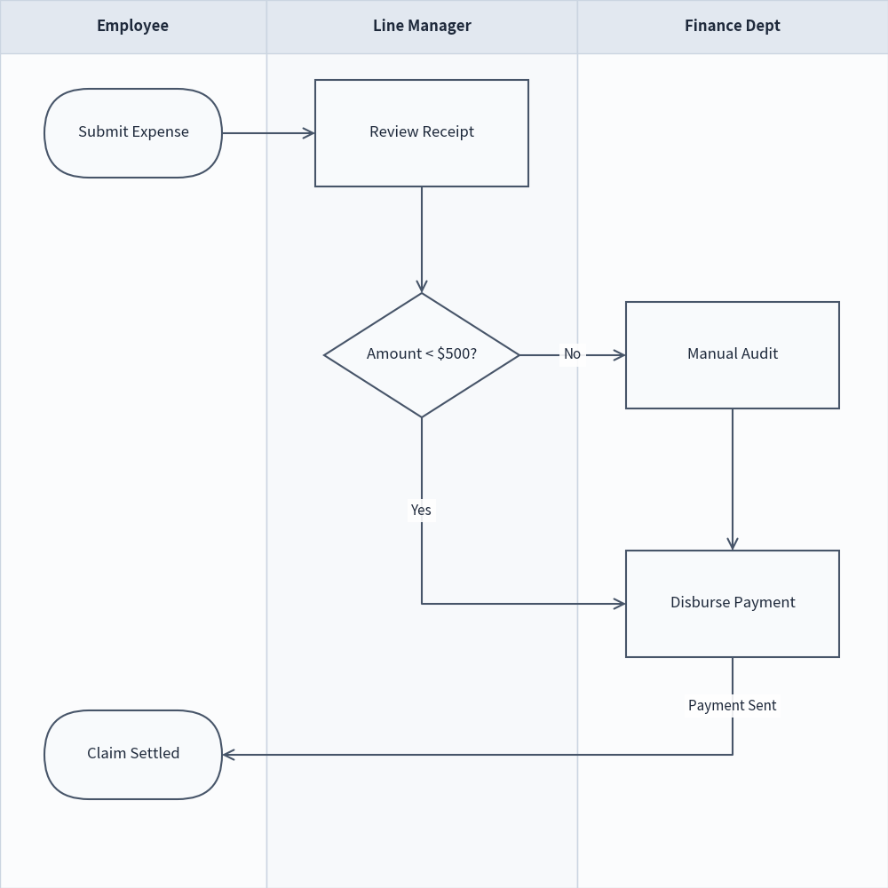

Flow Diagrams
drawlib.diagrams.flow provides a declarative, pure-Python flowchart and business process workflow diagramming module within drawlib.
It adheres to standard flowchart conventions (ISO 5807 / JIS X 0121) and supports cross-functional swimlane diagrams.
1. Core Concepts
| Component | Class | Description |
|---|---|---|
| Container | FlowDiagram |
Top-level container managing nodes, swimlanes, junctions, and connections. |
| Action Step | Process |
Rectangular task or action block (shape_type="process"). |
| Decision | Decision |
Rhombus / diamond shape representing a conditional branch (shape_type="decision"). |
| Terminal | Start / End |
Rounded stadium (pill) shape marking the start or end of a flow. |
| Input / Output | Data |
Parallelogram representing data input, output, or documents (shape_type="data"). |
| Waypoint / Tap | Junction |
Zero-size connectable point (x, y) for T-junction branching and wire taps. |
| Swimlane | Lane |
Column or row background boundary with a header card for grouping roles or actors. |
| Connection | FlowEdge |
Directed or undirected connection line with orthogonal routing, arrowheads, and labels. |
2. Quick Start
Below is a typical flowchart with input, conditional branching (Yes/No), and a loopback path:
from drawlib import canvas
from drawlib.diagrams.flow import (
Data,
Decision,
End,
FlowDiagram,
Process,
Start,
)
canvas.initialize()
flow = FlowDiagram(title="User Registration Flow")
# 1. Add nodes (coordinates specify shape center)
start = flow.add(Start("Start"), xy=(50.0, 90.0))
input_email = flow.add(Data("Enter Email"), xy=(50.0, 75.0))
check_exist = flow.add(Decision("Already\nRegistered?"), xy=(50.0, 55.0))
send_mail = flow.add(Process("Send Confirmation"), xy=(50.0, 35.0))
show_error = flow.add(Process("Show Error"), xy=(82.0, 55.0))
end = flow.add(End("End"), xy=(50.0, 15.0))
# 2. Connect steps
start.connect(input_email)
input_email.connect(check_exist)
# Decision branches
check_exist.connect(send_mail, label="No", start_side="bottom", end_side="top")
check_exist.connect(show_error, label="Yes", start_side="right", end_side="left")
# Loopback to input step
show_error.connect(input_email, start_side="top", end_side="right")
send_mail.connect(end)
flow.draw()

3. Node Geometries and Arguments
All nodes in drawlib.diagrams.flow derive from FlowNode and follow Drawlib's standard shape argument conventions:
| Argument | Type | Default | Description |
|---|---|---|---|
text |
str |
"" |
Text centered inside the geometric shape (multiline supported with \n). |
width |
float |
24.0 (20.0 for Start/End, 22.0 for Decision) |
Width of the node boundary. |
height |
float |
12.0 (10.0 for Start/End, 14.0 for Decision) |
Height of the node boundary. |
r |
float |
0.0 (5.0 for Start/End) |
Corner radius for rounded corners. |
style |
Style | None |
None |
Fill color, border stroke width, and border color. |
textstyle |
Style | None |
None |
Typography style (font, color, bold, alignment). |
textsize |
float | None |
None |
Font size shorthand. |
from drawlib import canvas
from drawlib.colors import Colors140
from drawlib.diagrams.flow import (
Data,
Decision,
End,
FlowDiagram,
Process,
Start,
)
from drawlib.types import Style
canvas.initialize()
flow = FlowDiagram(title="Supported Flowchart Symbols")
flow.add(Start("Start / End"), xy=(20.0, 70.0))
flow.add(Process("Process / Task"), xy=(50.0, 70.0))
flow.add(Data("Data (I/O)"), xy=(80.0, 70.0))
decision_style = Style(
fill_color=Colors140.LightYellow,
line_color=Colors140.DarkGoldenRod,
line_width=2.0,
)
flow.add(Decision("Decision\nCondition", style=decision_style), xy=(50.0, 35.0))
flow.draw()

4. Branching and Junctions
4.1 Decision Branching (Yes / No)
Branching paths can be defined using explicit connection sides (start_side, end_side) and labels:
decision = flow.add(Decision("Is Valid?"), xy=(50.0, 60.0))
on_success = flow.add(Process("Proceed"), xy=(50.0, 35.0))
on_failure = flow.add(Process("Handle Error"), xy=(80.0, 60.0))
decision.connect(on_success, label="Yes", start_side="bottom", end_side="top")
decision.connect(on_failure, label="No", start_side="right", end_side="left")
4.2 T-Junctions and Intermediate Branch Points
Use flow.junction(xy) or edge.add_point(xy) to create branch junctions (identical to ArchitectureDiagram):
from drawlib import canvas
from drawlib.diagrams.flow import (
Decision,
End,
FlowDiagram,
Process,
Start,
)
canvas.initialize()
flow = FlowDiagram(title="Order Dispatch Routing")
start = flow.add(Start("New Order"), xy=(50.0, 85.0))
check = flow.add(Decision("Express?"), xy=(50.0, 65.0))
# Create a waypoint junction below the decision
j = flow.junction(xy=(50.0, 48.0))
check.connect(j)
# Branch out from the junction
air = flow.add(Process("Air Freight"), xy=(25.0, 32.0))
ground = flow.add(Process("Ground Truck"), xy=(75.0, 32.0))
j.connect(air, label="Yes", routing="orthogonal")
j.connect(ground, label="No", routing="orthogonal")
# Merge into End
end = flow.add(End("Delivered"), xy=(50.0, 15.0))
air.connect(end, start_side="bottom", end_side="left")
ground.connect(end, start_side="bottom", end_side="right")
start.connect(check)
flow.draw()

5. Cross-Functional Swimlanes
Swimlanes separate steps into columns or rows representing departments, actors, or microservices.
5.1 Global Coordinate Alignment
In FlowDiagram, swimlanes act as a clean background and boundary layer on top of a unified global coordinate system.
This allows tasks across different lanes to be effortlessly aligned along the same horizontal line ($Y$ coordinate):
from drawlib import canvas
from drawlib.diagrams.flow import (
Decision,
End,
FlowDiagram,
Process,
Start,
)
canvas.initialize()
flow = FlowDiagram(title="Expense Approval Workflow", width=100.0, height=100.0)
# 1. Define vertical lanes (columns from left to right)
flow.add_lane("Employee", width=30.0)
flow.add_lane("Line Manager", width=35.0)
flow.add_lane("Finance Dept", width=35.0)
# 2. Add nodes (Y coordinates align corresponding steps horizontally)
submit = flow.add(Start("Submit Expense"), xy=(15.0, 85.0))
review = flow.add(Process("Review Receipt"), xy=(47.5, 85.0))
decision = flow.add(Decision("Amount < $500?"), xy=(47.5, 62.0))
j = flow.junction(xy=(47.5, 45.0))
decision.connect(j)
auto_pay = flow.add(Process("Disburse Payment"), xy=(82.5, 45.0))
manual_audit = flow.add(Process("Manual Audit"), xy=(82.5, 25.0))
end = flow.add(End("Close Claim"), xy=(15.0, 45.0))
# 3. Connect cross-lane steps
submit.connect(review)
review.connect(decision)
j.connect(auto_pay, label="Yes")
j.connect(manual_audit, label="No", start_side="bottom", end_side="left")
auto_pay.connect(end, label="Receipt Sent")
manual_audit.connect(auto_pay, start_side="top", end_side="bottom")
flow.draw()

5.2 Horizontal Swimlanes
Set lane_orientation="horizontal" to lay out lanes as rows from top to bottom:
flow = FlowDiagram(title="Warehouse Pipeline", lane_orientation="horizontal", width=100.0, height=60.0)
flow.add_lane("Storefront", height=30.0)
flow.add_lane("Warehouse", height=30.0)
order = flow.add(Start("New Order"), xy=(20.0, 45.0))
pack = flow.add(Process("Pack Items"), xy=(50.0, 15.0))
ship = flow.add(End("Ship Order"), xy=(80.0, 15.0))
order.connect(pack)
pack.connect(ship)